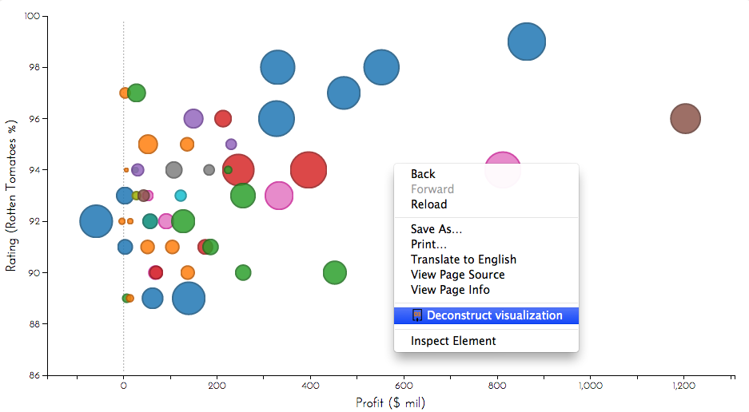

Deconstructor Tutorial
This tutorial will explain how to use the Chrome Deconstructor extension by extracting data from a visualization of movie data created by Jim Vallandingham.

This scatterplot shows the profit, Rotten Tomatoes rating, budget, and genre for a number of movies. Using the deconstructor, we will extract the data for all of the movies shown.
The Chrome Extension adds a context menu item titled "Deconstruct visualization". Right click anywhere on the visualization and select this item to begin deconstruction. Deconstructor will begin the process of extracting data from the visualization. When this process is complete, a new window will appear.

The window that appears displays the data tables extracted from the visualization on the left and the mappings extracted from a single selected data table on the right. To select a different data table, the user may click on its header text. To save a single data table as CSV, click the Save CSV button next to its header.
The form to export data at the top of the page allows the user to export all data as JSON or CSV. CSV export only includes data tables, while the JSON output also includes mappings.
Now that you've seen how the Deconstructor works, download it or check out the GitHub repository.